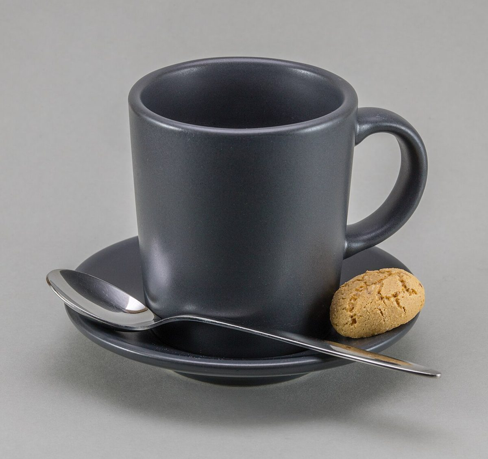
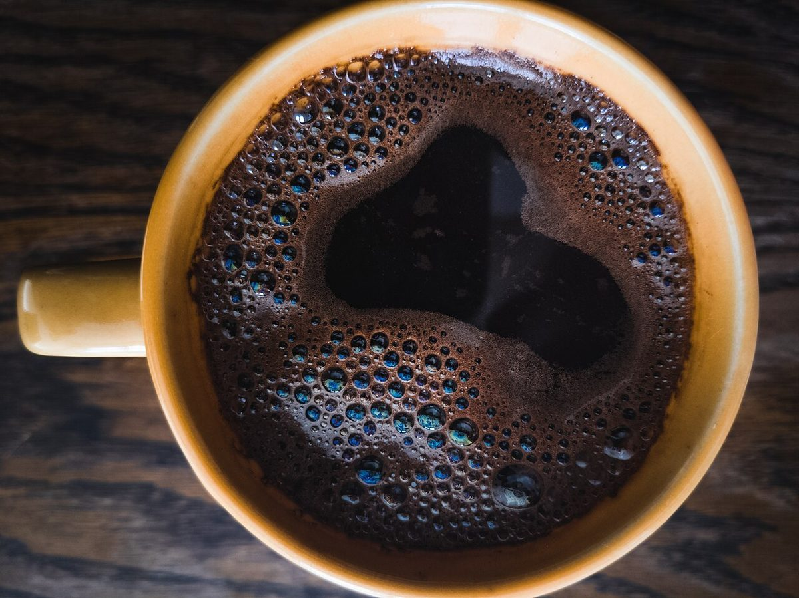

制作側の連想
「136」を、点の積み山として眺める
店名の由来は分かりません。制作側は「136」の数字を、1・3・6と分けて眺めてみました。1、3、6は、点を三角形に積み上げたときの個数(三角数)です。1個、3個(2+1)、6個(3+2+1)。そこでこのページは、1枚・3枚・6枚と写真を段に積んでいく作りにしています。お店の理念・由来とは無関係の、制作側の連想です。
写真の積み山(イメージ)
ひとつ、みっつ、むっつ。
写真は勝央町やお店のものではありません。国外・撮影地不明のフリー素材をイメージとして並べています。
1いちだん

3にだん


6さんだん





ご案内
お店のこと(確認できたものだけ)
| 所在地 | 〒709-4306 岡山県勝田郡勝央町美野136 |
|---|---|
| 電話 | 080-1570-2170 |
| 営業時間 | 準備中 |
| 定休日 | 準備中 |
| ご予約 | 準備中 |
| 駐車場 | 準備中 |
| SNS | Instagram @cafe_136 |